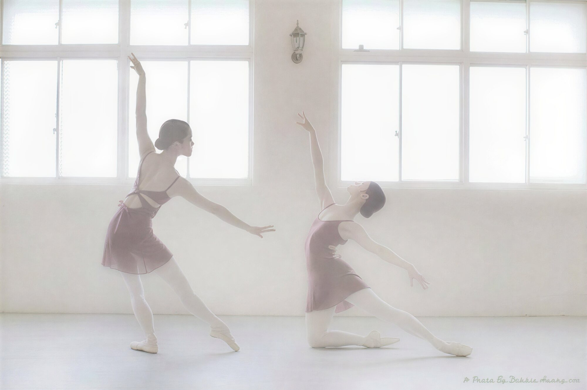

3 歲以上
兒童・幼兒啟蒙芭蕾
把握動作發展黃金期，在音樂與舞裙裡培養專注、美感與肢體協調。
兒童芭蕾 週一 16:30 ／ 啟蒙芭蕾 週四 18:45

關於 LYS Studio
LYS Studio 麗的舞蹈座落於汐止火車站旁，提供從芭蕾、當代到升學專業的完整訓練。 我們相信舞蹈不只是動作，而是一場與自己身體的長期對話——在重複裡長出細節，在不確定裡學會相信身體。

為什麼選擇我們
多位老師為國立臺北藝術大學舞蹈系畢業、雲門舞集專職舞者，以職業舞台經驗帶領教學。
從 3 歲幼兒啟蒙、成人零基礎入門，到升學與專業培訓，每個階段都有合適的路徑。
學生於國際舞蹈公開賽屢獲金獎與評審獎，老師亦多次榮獲最佳指導老師獎。
翻滾與技巧課程以安全為首要，鼓勵每位學生在被理解的環境中,一點一點建立自信。
位於汐止火車站星巴克對面，步行即達，下課後通勤無負擔。
提供個人課與比賽編舞，依個別目標量身打造,讓每一次調整都更精準。
課程一覽
把握動作發展黃金期，在音樂與舞裙裡培養專注、美感與肢體協調。

無論是否學過舞蹈，屬於大人的優雅芭蕾，在延展與線條裡找回平衡與自信。
把桿、Pirouette、Adagio 與 PBT 訓練，雕琢穩定核心與優雅線條。

釋放重心、與地板對話，重新拆解身體的用力方式，找到力量與自由的平衡。

芭蕾、現代、即興、翻滾完整訓練，在練習裡學習相信身體、找到自己的舞蹈語言。

個人課與比賽編舞依目標量身規劃。
競賽榮耀
2026 優勢盃國際舞蹈公開賽，LYS Studio 學生表現亮眼。
當代・個人 19–25 歲組
金獎 ・ 評審獎（Highest Score）芭蕾・個人社會 31–40 歲組
金獎 ・ 評審獎 ・ 最佳指導老師獎（鄭希玲）芭蕾・個人 14 歲組
金獎 ・ AODC 50% 獎學金當代・14 歲組
金獎 ・ Keithlink 品牌獎